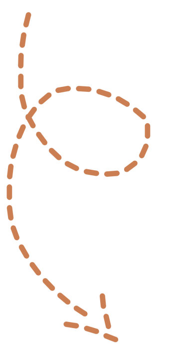
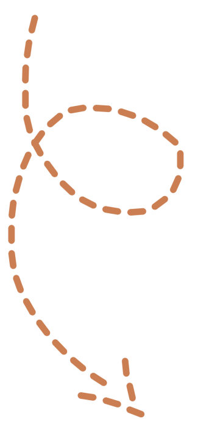
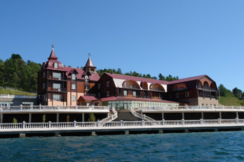

БАЙКАЛ
Самое большое пресное озеро
DiscoveRussia
БАЙКАЛ
Самое большое пресное озеро
Путь
Как добраться?
Из Горного Алтая в Иркутск. Горный Алтай - Москва - Иркутск. Цена:от 30000 RUB. С аэропорта на автобусе до Ольхона. Цена: 750 RUB.

Из Горного Алтая в Бийск на автобусе Цена: от 340RUB Поездом из Бийска в Иркутск. Цена: от 6000 RUB. С ж/д вокзала на автобусе до Ольхона. Цена: 750 RUB.
Вполне можно проехать 2137.8 км от Горного Алтая до Иркутска на авто. Путь займет приблизительно два дня с остановками. В стоимость входит: бензин, еда, мотель, платные участки дороги. Цена: от 18000 RUB.
Туризм
Что посетить?
 

Байкал одно из Семи чудес России, которое привлекало туристов со всего мира! Если зимний Байкал суров и величественен, то летний радует взор разными красками — все оттенки синевы воды и неба, белые облака, изумрудная зелень, рыжие и темно-коричневые горы, серые скалы, белый песок на пляжах.

Бухта Бабушка
Очень красивая и труднодоступная бухта на юго-западном побережье озера Байкал. Белоснежный песок, вода цвета лазури и зеленый лес вокруг. По соседству с бухтой находится несколько достопримечательностей. Одно из них - это Кедр Мужества, могучее дерево, выросшее на отдельно стоящей скале на берегу озера. Другой, не менее известный символ этих мест – ходульные деревья, большие сибирские сосны, выросшие на песке, из-под корней которых ветер настолько вымел почву, что под корневищами можно пройти.
Остров Огой
Огой — небольшой необитаемый остров. Главной достопримечательностью, привлекающей туристов, является Субурга — буддийская Ступа Просветления. Считается, что если пройти босиком вокруг Ступы 107 раз, прикоснуться к ней и загадать желание, то оно обязательно сбудется. На бурятском «огой» — это искаженное «угунгой», что переводится как «безводный».
Скала Шаманка
Беломраморная скала Шаманка является краем островидного мыса, далеко вдающегося в Байкал. Внутри скалы находится пещера, имеющая сквозной проход с западной стороны на восточную. В ней находится буддистский храм. Шаманка считается яркой достопримечательностью Байкала и привлекает на мыс Бархан туристов со всего мира. А все шаманы Бурятии и Якутии чтят ее как уникальное место для паломничества.
Мыс Хобой
Мыс Хобой - северная оконечность острова, столбовидная скала, похожая на острый клык. «Хобой» с бурятского так и переводится — «клык» или «коренной зуб». Здесь можно наблюдать красивейшие рассветы. Мыс Хобой — священное место. Местные называют скалу Дева. По легенде, это окаменевшая бурятка, которую заколдовали боги тенгри. Девушка просила себе такой же дворец, какой боги даровали ее мужу, чем и разгневала всесильных.На самом деле, если смотреть на клык со стороны озера, можно отчетливо увидеть женский силуэт.
Отели
Где остановиться переночевать?
"Просторы Байкала"
"Места для парковки явно мало, но в остальном лучший отель за свои деньги" "Парковка для машин, общая помойка на территории, вай-фай, общий балкон для всех."
Цена: 2200RUB.
"Недорогой отель на берегу, уютные номера и главное никого не слышно." "Ресторан отеля тоже зачётный разнообразное меню бар Ну и так же красивейший вид."
Цена: 4800RUB.

“Легенда Байкала”
Отель “Солнце”

"Очень нравится зона отдыха с сауной, хамам, бассейн с горкой." "Два ресторана, хорошее отношение сотрудников, есть банкетный и конференц-зал" "Отличное место для отдыха, всем рекомендую."
Цена: 5800RUB.
"Уборка номеров - отлично, номера чистые, всё исправно в них, ресторан хорош." "Отличный вид из отеля, понравилась еда и обслуживание" "Туалет и душ с горячей водой в номере."
Цена: 8000RUB.
Отель “Baikal View”
Питание
Где остановиться перекусить?
Ресторан “Охотников”
ДИАПАЗОН ЦЕН 1 500 руб - 3 500 руб ТИП КУХНИ Русская, Гриль ВРЕМЯ ПРИЕМА ПИЩИ Завтрак, Обед, Ужин, Напитки, Открыто допоздна
ДИАПАЗОН ЦЕН 190 руб - 2 980 руб ТИП КУХНИ Азиатская, Монгольская ВРЕМЯ ПРИЕМА ПИЩИ Обед, Ужин, Открыто допоздна
“Кочевник”
Кафе “Байкал Лав”
ДИАПАЗОН ЦЕН 40 руб - 200 руб ТИП КУХНИ Международная, Европейская, Русская ВРЕМЯ ПРИЕМА ПИЩИ Обед, Ужин, Бранч, Напитки
ДИАПАЗОН ЦЕН 1 021 руб - 10 212 руб ТИП КУХНИ Итальянская, Средиземноморская, Европейская, МеждународнаяГастропаб ВРЕМЯ ПРИЕМА ПИЩИ Обед, Завтрак, Ужин, Бранч
Ресторан “III Figaro”

Байкал огромен и прекрасен! Озеро восхищает своей удивительной природой, разнообразием флоры и фауны! Каждый уголок наполнен разными легендами и сказаниями. Далее по курсу Благовещенск. Отправляйтесь туда, чтобы насладиться жизнью города на Российско-Китайской границе!
Путешествуй с DiscoveRussia